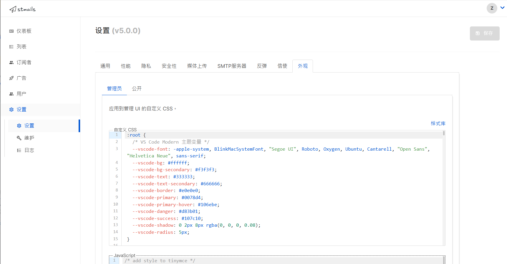

模板¶
模板是一种可重用的 HTML 设计，可用于活动和事务性消息。最常见的是，模板具有标准的页眉和页脚区域，包含徽标和品牌元素，活动内容插入在中间。stmails 支持 Go 模板 表达式，让您可以创建强大的动态 HTML 模板。它还集成了 100 多个有用的 Sprig 模板函数。
活动模板¶
活动模板用于电子邮件活动。这些模板在 UI 的 活动 -> 模板 下创建和管理，并在创建新活动时选择。
事务性模板¶
事务性模板用于使用事务性 API 发送任意事务性消息。这些模板在 UI 的 活动 -> 模板 下创建和管理。
模板表达式¶
在活动和模板正文中可以使用多个模板函数和表达式。它们以 {{ .Subscriber.Email }} 的形式编写，即在双大括号 {{ 和 }} 之间的表达式。
订阅者字段¶
| 表达式 | 说明 |
|---|---|
{{ .Subscriber.UUID }} |
订阅者随机生成的唯一 ID |
{{ .Subscriber.Email }} |
订阅者的电子邮件 ID |
{{ .Subscriber.Name }} |
订阅者的姓名 |
{{ .Subscriber.FirstName }} |
订阅者的名字（自动从姓名中提取） |
{{ .Subscriber.LastName }} |
订阅者的姓氏（自动从姓名中提取） |
{{ .Subscriber.Status }} |
订阅者的状态（启用、禁用、加入黑名单） |
{{ .Subscriber.Attribs }} |
任意属性的映射。可以使用 . 访问字段，例如：.Subscriber.Attribs.city |
{{ .Subscriber.CreatedAt }} |
订阅者首次添加时的时间戳 |
{{ .Subscriber.UpdatedAt }} |
订阅者修改时的时间戳 |
| 表达式 | 说明 |
|---|---|
{{ .Campaign.UUID }} |
活动随机生成的唯一 ID |
{{ .Campaign.Name }} |
活动的内部名称 |
{{ .Campaign.Subject }} |
活动的电子邮件主题 |
{{ .Campaign.FromEmail }} |
发送活动的电子邮件地址 |
函数¶
| 函数 | 说明 |
|---|---|
{{ Date "2006-01-01" }} |
以 Go 日期布局 打印当前日期时间 |
{{ TrackLink "https://link.com" }} |
获取 URL 并生成跟踪 URL。用于活动正文和模板。 |
https://link.com@TrackLink |
TrackLink 的简写。例如：<a href="https://link.com@TrackLink">链接</a> |
{{ TrackView }} |
插入单个跟踪像素。应该只使用一次，最好在模板页脚中。 |
{{ UnsubscribeURL }} |
退订和管理首选项 URL。适合在模板页脚中使用。 |
{{ MessageURL }} |
查看电子邮件消息托管版本的 URL。 |
{{ OptinURL }} |
双重确认页面的 URL。 |
{{ Safe "<!-- comment -->" }} |
按原样添加任何 HTML 代码。 |
Sprig 函数¶
stmails 集成了 Sprig 库，提供了 100 多个用于处理字符串、数字、日期等的实用函数，可用于模板中。有关完整函数列表，请参阅 Sprig 文档。
示例模板¶
表达式 {{ template "content" . }} 应该在每个模板中只出现一次，表示插入电子邮件内容的位置。这是一个示例 HTML 电子邮件，具有固定的页眉和页脚，内容插入在中间。
<!DOCTYPE html>
<html>
<head>
<style>
body {
background: #eee;
font-family: Arial, sans-serif;
font-size: 6px;
color: #111;
}
header {
border-bottom: 1px solid #ddd;
padding-bottom: 30px;
margin-bottom: 30px;
}
.container {
background: #fff;
width: 450px;
margin: 0 auto;
padding: 30px;
}
</style>
</head>
<body>
<section class="container">
<header>
<!-- 这将出现在所有电子邮件的页眉中。
订阅者的名字将自动插入这里。 //-->
Hi {{ .Subscriber.FirstName }}!
</header>
<!-- 这是插入电子邮件正文的位置 //-->
<div class="content">
{{ template "content" . }}
</div>
<footer>
Copyright 2019. All rights Reserved.
</footer>
<!-- 跟踪像素将插入这里 //-->
{{ TrackView }}
</section>
</body>
</html>
信息
对于纯文本活动，创建一个没有 HTML 内容的模板，只包含占位符 {{ template "content" . }}
示例活动正文¶
活动正文可以使用内置的 WYSIWYG 编辑器或原始 HTML 文档编写。假设订阅者有一组定义的属性，此示例显示如何在活动中渲染这些值。
嘿，你注意到模板如何显示你的名字了吗？
你的姓氏是 {{.Subscriber.LastName }}。
你已经完成了 {{ .Subscriber.Attribs.projects }} 个项目。
{{ if eq .Subscriber.Attribs.city "Bengaluru" }}
你住在班加罗尔！
{{ else }}
你住在哪里？
{{ end }}
这是一个你可以点击的链接，它将被跟踪。
<a href="{{ TrackLink "https://google.com" }}">Google</a>
上面的示例使用 if 条件根据订阅者属性的值显示两条消息之一。使用 Go 模板表达式可以实现许多这样的动态表达式。
系统模板¶
系统模板用于渲染面向用户的公共页面，如订阅管理页面，以及自动生成的系统电子邮件，如确认订阅的电子邮件。这些都捆绑在 stmails 中，但可以通过在本地复制静态目录并使用 ./stmails --static-dir=your/custom/path 标志将其路径传递给 stmails 来自定义。
公共页面¶
| /static/public/ | |
|---|---|
index.html |
所有页面使用的基本模板，包含页眉和页脚。 |
home.html |
根域名上的登录页面，带有登录按钮。 |
message.html |
通用成功/失败消息页面。 |
optin.html |
确认订阅页面。 |
subscription.html |
订阅管理页面，包含数据导出和删除选项。 |
subscription-form.html |
列表选择和订阅表单页面。 |
要使用 CSS 和 Javascript 编辑公共页面的外观，请转到设置 > 外观 > 公共：

系统电子邮件¶
| /static/email-templates/ | |
|---|---|
base.html |
所有系统生成的电子邮件使用的基本模板，包含页眉和页脚。 |
campaign-status.html |
在活动开始、完成等时发送给管理员的电子邮件通知。 |
import-status.html |
在导入作业完成时发送给管理员的电子邮件通知。 |
subscriber-data.html |
当订阅者请求其私人数据的完整转储时发送的电子邮件。 |
subscriber-optin.html |
当未确认的订阅者被添加时发送的自动确认订阅电子邮件。 |
subscriber-optin-campaign.html |
从列表页面启动确认订阅活动时插入到活动正文中的电子邮件内容。 |
default.tpl |
首次安装 stmails 时在活动 -> 模板中创建的默认活动模板。之后不再使用。 |
信息
要将系统电子邮件模板转换为纯文本，请从 base.html 中删除 <!doctype html>，并从模板中删除所有 HTML 标签，同时保留 Go 模板代码。